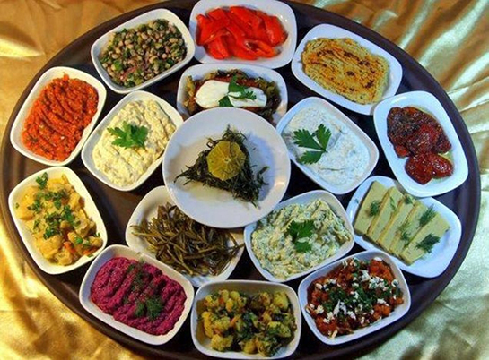
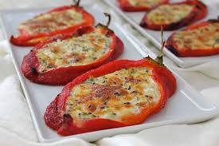
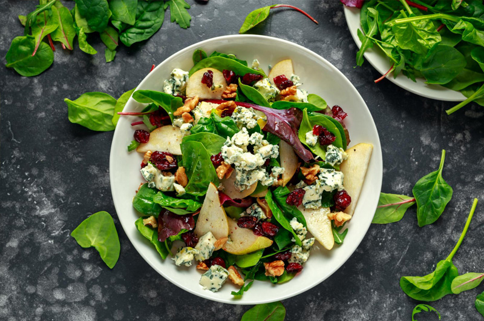
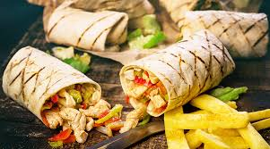
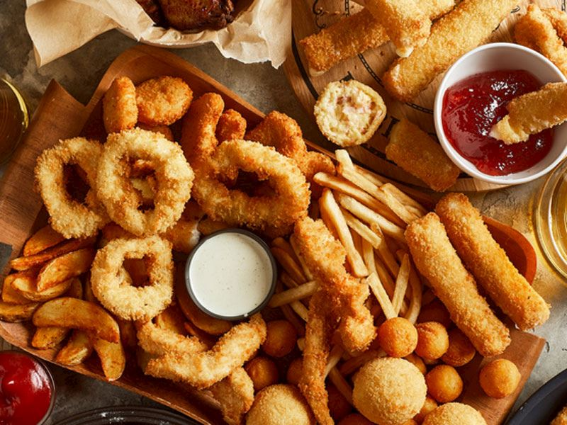

Başlangıç Yemekleri
Başlangıç yemekleri, bir yemek menüsünde ana yemeklerden önce sunulan, genellikle küçük porsiyonlarda ve hafif olan yemeklerdir. Bu yemekler, misafirlere iştah açıcı bir tat sunarak ana yemeklere geçişi sağlar.
Başlangıç yemeklerinin bazı örnekleri şunlardır:
- Çorbalar
- Soğuk Mezeler
- Sıcak Mezeler
- Salatalar
- Dürümler
- Kızarmış Yiyecekler
Bu yemekler genellikle aperatif olarak yemeğe başlamak için tercih edilir ve sofradaki ana yemeklerin öncesinde sunulur.
Çorbalar

Çorbalar,genellikle sıvı bazlı, içeriğinde sebze,et,bakliyat veya tahıl bulunan ve çeşitli baharatlarla tatlandırılmış yemeklerdir. Çorbalar, sıcak olarak servis edilir ve genellikle yemeklerin başlangıcında tüketilir. Besleyici, hafif ve doyurucu olmaları nedeniyle dünya çapında farklı kültürlerde popülerdir. Çorbalar,genellikle içeriklerine,hazırlanış şekillerine ve kıvamlarına göre çeşitli sınıflara ayrılır.
Soğuk Mezeler
Soğuk mezeler yemeklerin başlangıcında servis edilen soğuk olarak hazırlanan ve genellikle küçük porsiyonlarla sunulan Türk mutfağına ait geleneksel lezzetlerdir Çeşitli malzemelerle hazırlanan soğuk mezeler hem lezzetli hem de görsel olarak zengin olmakla birlikte hafif taze ve sağlıklı seçenekler sunar.
Sıcak Mezeler
Sofralara ayrı bir lezzet katan sıcak mezeler adından da anlaşılacağı gibi sıcak servis edilirler Sebzelerden etlere, hamur işlerinden peynirlere kadar birçok farklı malzemeyle hazırlanabilirler.
Salatalar
Genellikle sebze veya meyvelerden oluşur. Üzerine yoğurt veya salata sosu dökülerek hazırlanan ferahlatıcı bir başlangıçtır. Mevsimine ve yapıldığı yöreye özgü sayısız çeşidi bulunur.
Dürümler
Özellikle Türk mutfağının vazgeçilmezlerinden olan dürümler, ince açılmış lavaş ekmeğine çeşitli iç malzemeler sarılarak hazırlanır. İç harç olarak genellikle et, sebze, peynir ve çeşitli soslar kullanılır.
Kızarmış Yiyecekler
Yiyeceklerin sıcak yağ içerisinde pişirilmesiyle elde edilir. Hem lezzeti hem de çıtır dokusu sayesinde çoğu kişinin vazgeçilmezlerindendir.